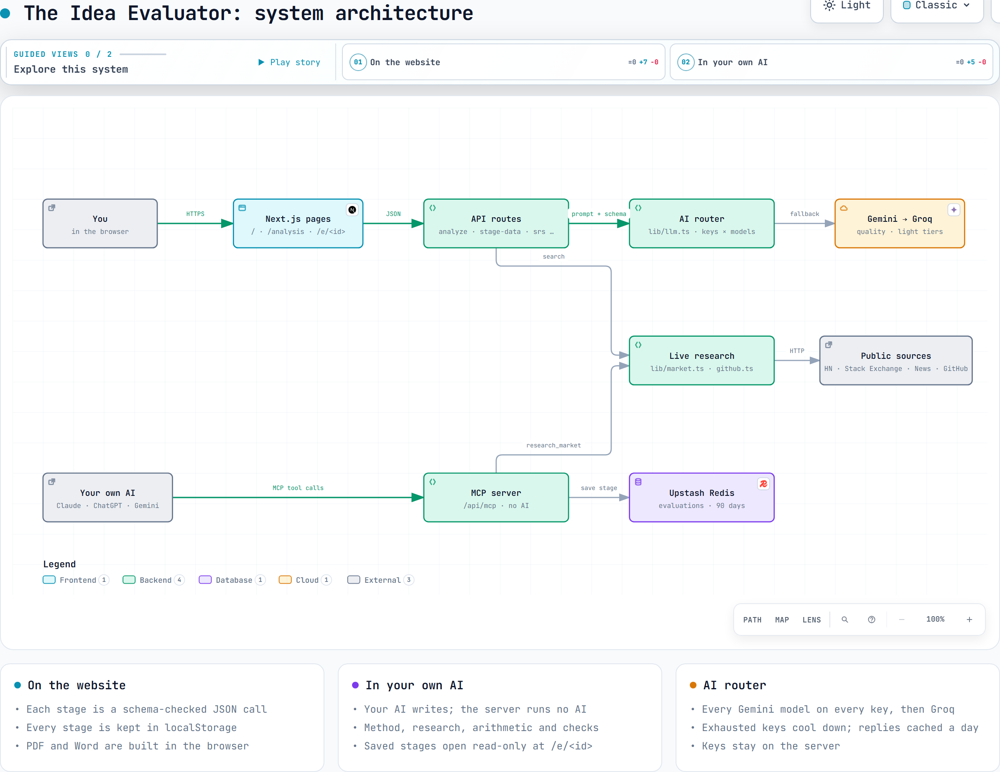
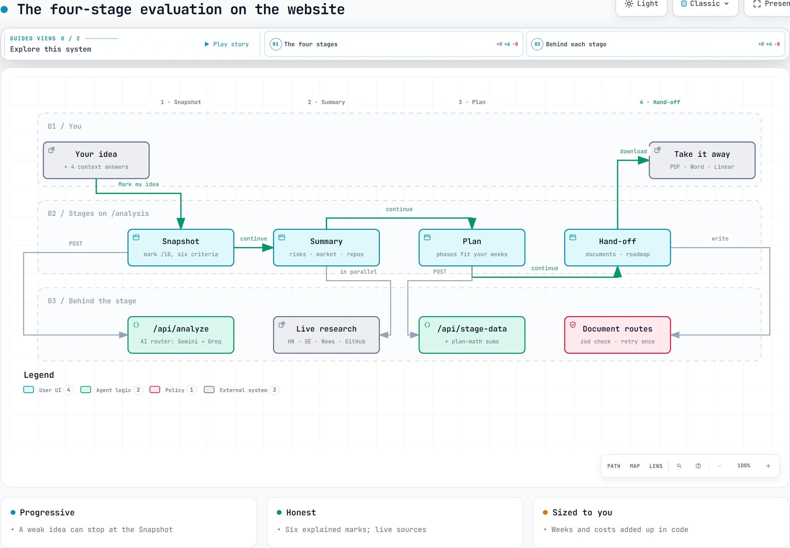
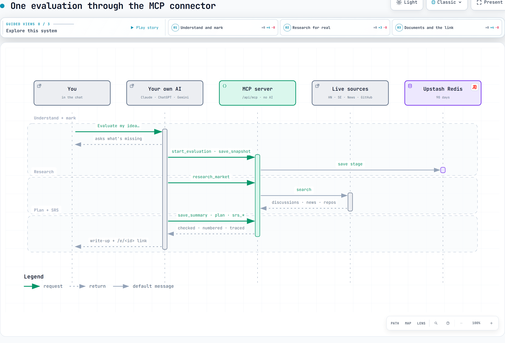
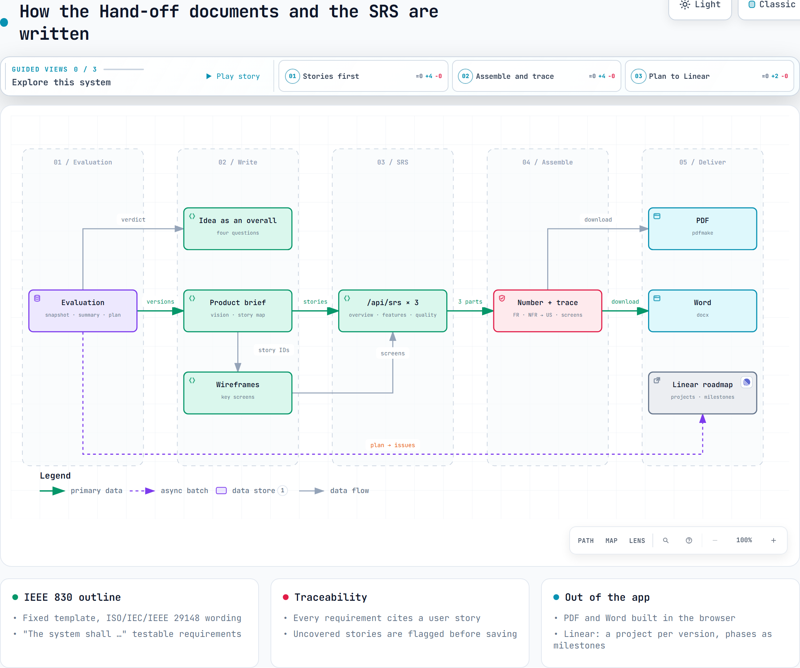

The Idea Evaluator
in your own AI
Generic AI cheers every idea. Add The Idea Evaluator as an MCP connector and your own AI asks what's missing, marks the idea out of 10, researches it in real forums, news and GitHub, plans it to your weeks, and writes an IEEE 830 SRS with every requirement traced to a user story.
How it works

System architectureThe website, the MCP server, the AI router and the sources

The four stagesSnapshot, Summary, Plan and Hand-off on the website

Through the connectorOne evaluation, tool call by tool call

The SRS and the documentsStories first, then three parts, numbered and traced
Connector address
Add it as a custom connector in Claude, ChatGPT or Gemini: https://idea-evaluator-slash.vercel.app/api/mcp